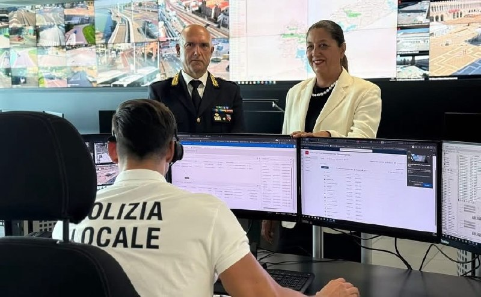
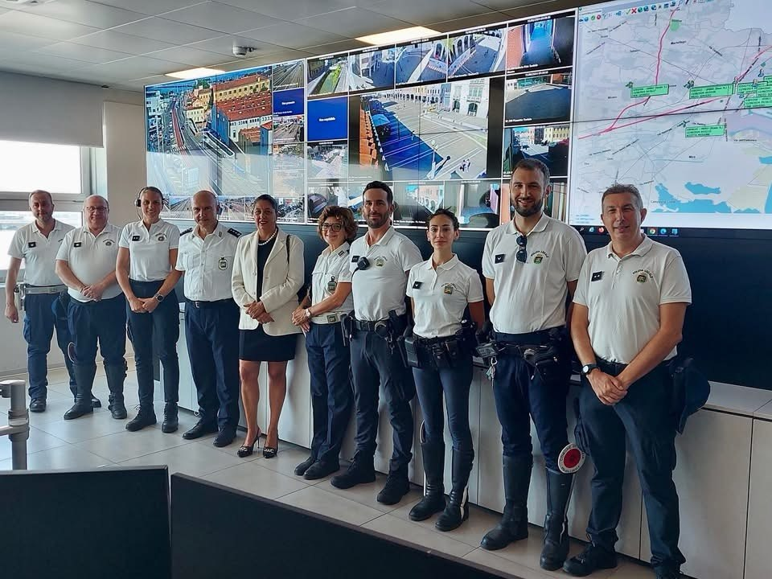

Videosorveglianza Un sistema potenziato e capillare

Negli ultimi 10 anni il sistema di videosorveglianza urbana è stato potenziato in modo significativo, passando dalle 132 telecamere attive nel 2015 alle 920 installate nel 2026. Un incremento che testimonia un investimento concreto e continuo nel rafforzamento della sicurezza urbana e nel controllo del territorio.

Oggi il sistema rappresenta un'infrastruttura strategica condivisa, a disposizione di tutte le Forze dell'Ordine per attività di prevenzione, controllo e indagine. Negli ultimi 4 anni sono stati destinati oltre 3 milioni di euro al suo potenziamento, migliorando copertura, qualità tecnologica e capacità di presidio del territorio.